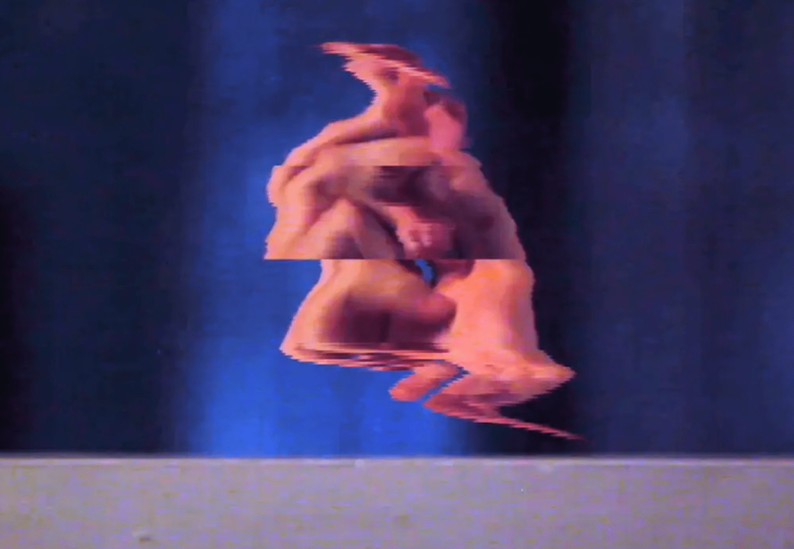

Glitch Hands

The media momentum is for expressive works.
added: 17-06-2020
linked entries ⤳
time based
The timed-based sector is for temporal experiments.
Git For Filmmakers Making a powerful version-control system accessible to filmmakers.
Slitschan Experiments Explorations of alternative temporal spaces inside videos.
Midi Plotter Printing-process as Time-based Media Printing as timed-based media.